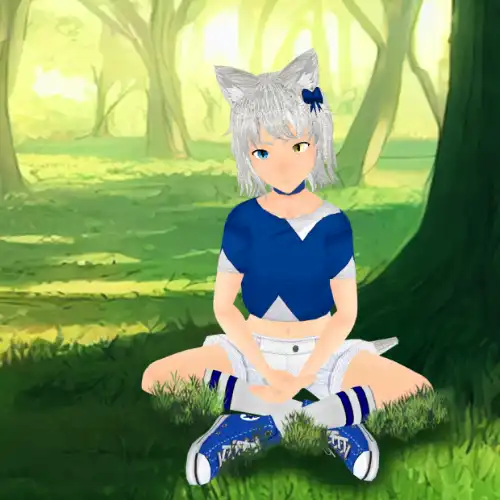
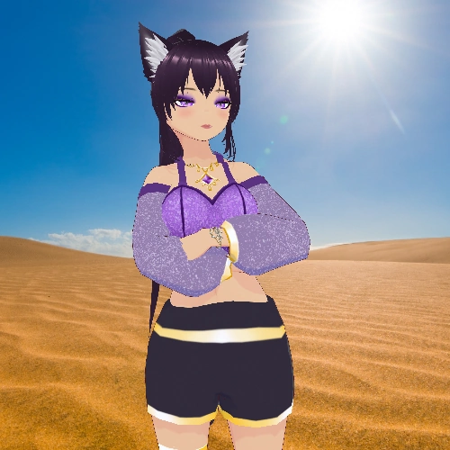

Assistants
One of the most interesting parts of the swolekat stream is that every stream is a collab with the assistants. Swolebae was the first but there are now a bunch to choose from.
Swolebae
Swolebae is a super genki catgirl who loves anime, games, and anything japanese. She originally found Swolekat when he was just a cat and helped him become human.
Gothbae
Unlike her cousin, Gothbae is much less genki but still has a good heart. While working at an occult bookstore she likes to take care of stray cats in her spare time.
Glint Ketamine
Glint is a mimic from a far away land from a time long long ago. She has chosen the form of Glitch_Kitten in order to blend in more. While some think she is convincing there are others who are not persuaded.

Kyle
In an alternate universe, the price for becoming human again was gains and kyle paid dearly. While he shares qualities with SWolekat, his alternate universe counterpart, Kyle is still getting used to being just a little guy.
Edward Fundo
Ed was originally a cat turned into a human form. He was originally taken care of by Gothbae who does not recognize him after his transformation. It's unfortunate since he has acquired vast material wealth in order to impress her.
Cowbae
Being an alternate universe version of Swolebae, she shares a lot of characteristic with the original assistant. However, her obsession with Texas and love of firearms has her universe's swolekat stuck as a bull.
Nunbae
In a different universe gothbae found solace through religion instead of the occult. Nunbae tries to bring about "the seisoing" of the chat all for the glory of her god: Slim Chickens.

Zara
She's here to fulfill Swolebae's wish of Swolekat being a successful streamer. Pulling more hands from other dimensions just leaves Zara more time for what she does best: being flawless.